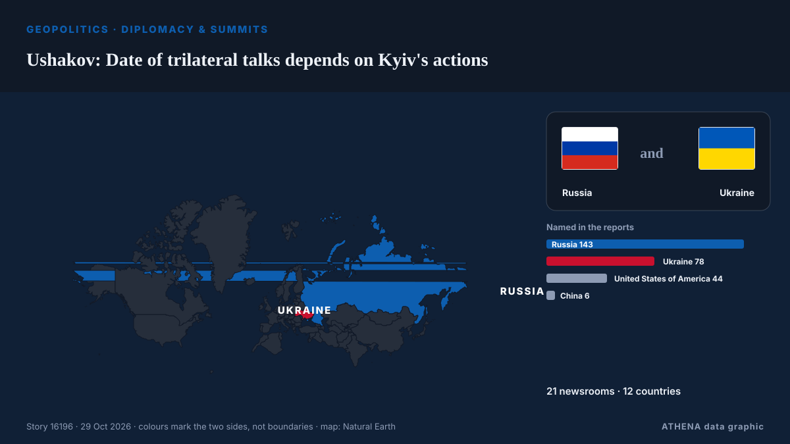

Ushakov: Date of trilateral talks depends on Kyiv's actions

Russian President Vladimir Putin told US envoy Steve Witkoff that Moscow was willing to resume stalled, US-mediated peace talks with Ukraine, Kremlin foreign policy aide Yury Ushakov said after the… de RFE/RL (English)
Informado de forma independiente por 21 medios de 12 países desde el 21 oct; el primero fue RFE/RL (English); la cobertura va perdiendo fuerza. ATHENA califica el riesgo como elevado (4.4/10), sobre todo por la gravedad del daño descrito y su alcance geográfico y sectorial. La confianza es del 94 % (alta): lo corroboran 21 medios independientes, con una fiabilidad media de las fuentes del 79 %.
Por qué importa: La invasión a gran escala de Ucrania por Rusia comenzó en febrero de 2022. Este seguimiento cubre los combates, los ataques a infraestructuras y la diplomacia en torno a la guerra, según la prensa de todo el mundo.
Qué ha cambiado: 2 informaciones nuevas de 2 redacciones en las 24 horas hasta el 29 oct.
Primer titular: Russia ready to resume trilateral talks on Ukraine — Putin
Los titulares se muestran en inglés, tal como se publicaron.
De un vistazo
Seleccionado, puntuado y redactado por la metodología publicada de ATHENA. Ningún editor interviene en eventos concretos. Cómo se elabora ›
| 21 Oct 07:43 UTC | 16 |
|---|---|
| 21 Oct 19:43 UTC | 1 |
| 22 Oct 07:43 UTC | 7 |
| 22 Oct 19:43 UTC | 3 |
| 23 Oct 07:43 UTC | 3 |
| 23 Oct 19:43 UTC | 1 |
| 24 Oct 07:43 UTC | 0 |
| 24 Oct 19:43 UTC | 0 |
| 25 Oct 07:43 UTC | 3 |
| 25 Oct 19:43 UTC | 3 |
| 26 Oct 07:43 UTC | 1 |
| 26 Oct 19:43 UTC | 0 |
| 27 Oct 07:43 UTC | 0 |
| 27 Oct 19:43 UTC | 0 |
| 28 Oct 07:43 UTC | 1 |
| 28 Oct 19:43 UTC | 0 |
| 29 Oct 07:43 UTC | 2 |
| 22 Oct 07:05 UTC | 0.0 |
|---|---|
| 22 Oct 19:55 UTC | 1.7 |
| 22 Oct 19:58 UTC | 3.2 |
| 23 Oct 06:43 UTC | 4.5 |
| 29 Oct 17:51 UTC | 4.4 |
Por qué estas cifras
Importancia
Riesgo
Confianza
La cobertura: quién informó y cuándo
titular tal como se publicó · abre el original- RFE/RL (English) · INTAfter Witkoff Meeting, Putin 'Ready To Resume' US-Led Peace Talks With Ukraine
- PBS NewsHour World · Estados Unidos · United StatesPutin agrees to resume trilateral Russia-Ukraine-U.S. talks next month
- TASS (English) · Rusia · RussiaPutin and Witkoff discuss resumption of trilateral talks on Ukraine — Kremlin aide
- TASS (English) · Rusia · RussiaPutin says Russia ready to resume trilateral talks in November — aide
- The Straits Times · Singapur · SingaporeRussia is willing in principle to join new Ukraine peace talks in November, Kremlin says
- TASS (English) · Rusia · RussiaNew approaches by EU, Ukraine of little use for settlement — Kremlin aide
- Meduza (English) · Rusia · RussiaKremlin says it’s ready to resume trilateral talks but sees little ‘useful’ in new proposals from Ukraine and the EU
- TASS (English) · Rusia · RussiaNew round of trilateral talks on Ukraine could take place in Abu Dhabi — Kremlin aide
- TASS (English) · Rusia · RussiaPutin yet to decide on Russian delegation to new trilateral Ukraine talks
- TASS (English) · Rusia · RussiaEveryone interested in meeting between Russia, China and US, Kremlin aide says
- TASS (English) · Rusia · RussiaRussian delegation to trilateral talks may include Kremlin aide, military officers
- TASS (English) · Rusia · RussiaRussia-US-Ukraine talks in Abu Dhabi expected to involve experts — Kremlin aide
- Global News (World) · Canadá · CanadaPutin to resume three-way talks with Ukraine, Washington: Kremlin
- Kyiv Post · Ucrania · UkrainePutin ‘Ready’ for Three-Way Ukraine Talks in November, Kremlin Says
- Interfax-Ukraine (English) · Ucrania · UkraineMoscow tells Witkoff it is ready to resume trilateral talks in first ten days of Nov
- Kyiv Post · Ucrania · UkraineUkraine Counts on Beijing’s ‘Constructive Role’ as Sybiha Meets Chinese Ambassador
- China Daily — page reader · ChinaRussia ready to resume trilateral talks with US, Ukraine in mid-November
- Egypt Independent · Egipto · EgyptMassive strikes hit Kyiv hours after Putin agrees to fresh peace talks
- TASS (English) · Rusia · RussiaKremlin spokesman weighs in on upcoming trilateral talks with Ukraine
- France 24 English · Francia · FranceUkraine and Russia exchange strikes after US envoy visit to the Kremlin
- France 24 English · Francia · France‘No change’ in Russia’s attitude on war shown by deadly attacks, Zelensky says
- TASS (English) · Rusia · RussiaRussia ready to resume trilateral talks on Ukraine — Putin
- Ukrainska Pravda (English) · Ucrania · UkrainePutin: Russia has told US it is ready to resume trilateral talks
- APA (English) · Azerbaiyán · AzerbaijanRussia ready to resume trilateral talks on Ukraine — Putin
- TASS (English) · Rusia · RussiaTalks with US,Ukraine to focus on security guarantees — Putin
- Anadolu Agency (English) · Turquía · TurkeyPutin reaffirms Russia’s readiness to resume trilateral peace talks on Ukraine war
- CGTN (World) · ChinaPutin says talks must focus on security for Russia, Ukraine and Europe
- France 24 English · Francia · FranceRussia ready for talks on plans for final Ukraine deal, not truce: Putin
- Xinhua (English) — page reader · ChinaFlash: Ukraine ready for trilateral meeting with U.S., Russia: Zelensky
- Ukrinform (English) · Ucrania · UkraineZelensky: Ukraine ready for negotiations at any time; Russia determines whether they take place
- Kyiv Independent · Ucrania · UkraineTrilateral peace talks with Russia, US negotiators to begin in November, Zelensky says
- Ukrainska Pravda (English) · Ucrania · UkraineRussia ready to hold preliminary talks with Ukraine after 4 November
- Kyiv Independent · Ucrania · UkraineMoscow ready to resume trilateral talks with Ukraine, US after Nov. 4, Kremlin aide says
- Kyiv Post · Ucrania · UkraineRussia Open to US-Ukraine Trilateral Talks After Nov. 4
- Novinite · BulgariaUkraine-US-Russia Talks May Resume in November as Trump Eyes Business With Both Sides
- CGTN (World) · ChinaRussia, US, Ukraine signal plans for trilateral talks in November
- Ukrainska Pravda (English) · Ucrania · UkraineUS House speaker says Washington is close to trilateral talks on Ukraine
- APA (English) · Azerbaiyán · AzerbaijanKremlin: Decision to resume trilateral talks imposes no restrictions on military operations
- APA (English) · Azerbaiyán · AzerbaijanPresidential Aide: European countries will not participate in trilateral talks between Russia, US and Ukraine
- Graphic Online · GhanaPresident Mahama commends Putin’s readiness to resume Ukraine talks